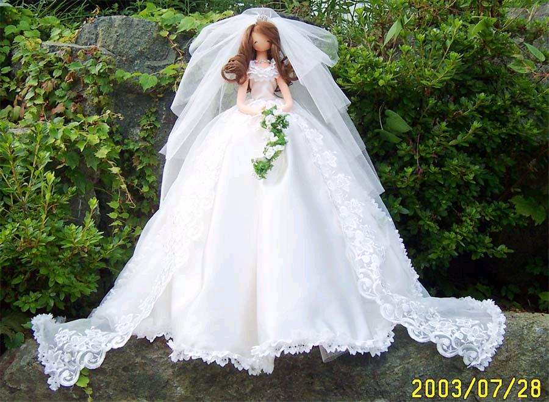

Problem E: Wedding
Up to thirty couples will attend a wedding feast, at which they will be
seated on either side of a long table. The bride and groom sit at one
end, opposite each other, and the bride wears an elaborate headdress
that keeps her from seeing people on the same side as her. It is
considered bad luck to have a husband and wife seated on the same side
of the table. Additionally, there are several pairs of people conducting
adulterous relationships (both different-sex and same-sex relationships
are possible), and it is bad luck for the bride to see both members of
such a pair. Your job is to arrange people at the table so as to
avoid any bad luck.
The input consists of a number of test cases, followed by a line
containing 0 0. Each test case gives n, the number of couples, followed
by the number of adulterous pairs, followed by the pairs, in
the form "4h 2w" (husband from couple 4, wife from couple 2), or "10w
4w", or "3h 1h". Couples are numbered from 0 to n-1 with the
bride and groom being 0w and 0h. For each case, output a single line containing
a list of the people that should be seated on the same side as the
bride. If there are several solutions,
any one will do. If there is no solution, output a line containing
"bad luck".
Sample Input
10 6
3h 7h
5w 3w
7h 6w
8w 3w
7h 3w
2w 5h
0 0
Possible Output for Sample Input
1h 2h 3w 4h 5h 6h 7h 8h 9h
Prabhakar Ragde